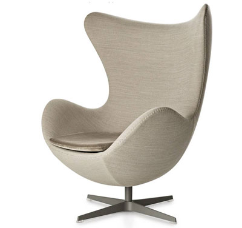
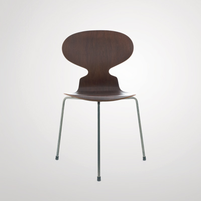
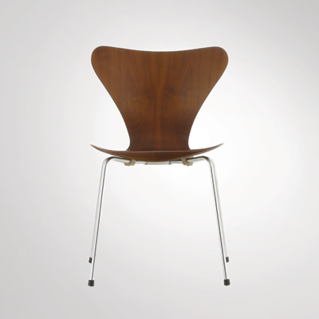
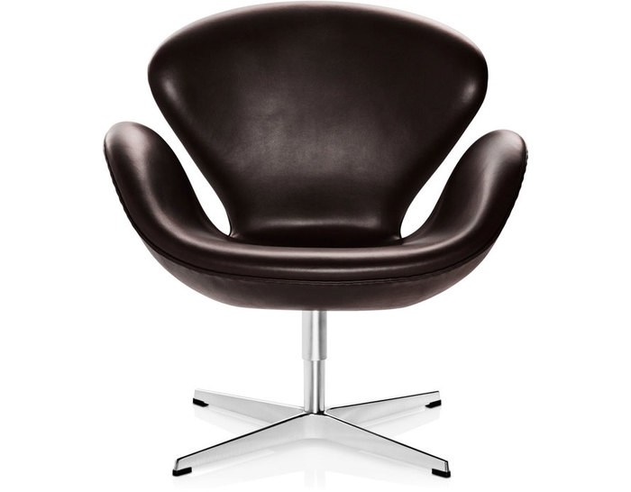

Arne Jacobsen (1902-1971) was one of Denmark's most influential 20th century architects and designers. Both his buildings and products, like his Swan and Egg Chairs, combine modernist ideals with a Nordic love of naturalism.
Biography
Born in Copenhagen in 1902, the Danish architect and designer Arne Jacobsen trained as a stonemason before studying architecture at the Kongelige Danske Kunstakademie in Copenhagen until 1927. While still a student, Arne Jacobsen showed a chair he had designed at the important Paris "Exposition Internationale des Arts Décoratifs et Industriels Modernes" in 1925 and was awarded a silver medal for it. Even today, Arne Jacobsen is best known for the chairs he designed.
For the firm of Fritz Hansen, Arne Jacobsen designed the "Ant" (Model No. 3100: 1951-52), a chair whose name was inspired by the nipped in waist of the back as well as its thin tubular steel legs. In 1955 Arne Jacobsen designed a similar chair for Series 7 (Model No. 3107), which was one of the most commercially successful lines in chairs ever produced. In 1958 Arne Jacobsen designed, for the interior of the Royal SAS Hotel in Copenhagen, the "Egg" and "Swan" chairs, which today are numbered among the design classics of the 20th century.
Arne Jacobsen never opted solely for either design or architecture; Most of his architecture projects were conceived as total works of art, which meant that Arne Jacobsen designed a building down to the most minute detail, creating for it wallpaper, carpets, utilitarian appliances, lighting, and furniture.
Arne Jacobsen began his career as an employee in Paul Holsoe's architecture practice. In 1929 Arne Jacobsen opened a practice of his own in Hellerup. Arne Jacobsen was among the first to introduce Modernism to Denmark, for instance, in his design for a "House of the Future", which he co-designed with Flemming Lassen for a competition in 1929. It was conceived as a round glass and concrete structure with a flat roof. In 1930 Arne Jacobsen designed the functionalist Rothenborg House, which he planned inside and out as a total work of art. From 1931-1934 Arne Jacobsen worked on designing the buildings for the "Bellavista" settlement in Copenhagen, with which he earned his reputation as an exponent of the International Modern style of architecture.
One of Arne Jacobsen's most important buildings is the Royal SAS Hotel in Copenhagen (1956-60), for which he not only designed the seat furniture but also all the rest of the interior, including lighting, cutlery, and even such details as ashtrays. It was followed by many other important buildings and designs. Between 1956 and 1965 Arne Jacobsen was a professor of architecture at the Skolen for Brugskunst in Copenhagen.
Design
As a designer, Jacobsen made prototypes for furniture, textiles, wallpaper, silverware, and other items. The cooperation between Arne Jacobsen and Fritz Hansen dates back to 1934, but it was in 1952 the break-through came with the Ant™. It was succeeded by the Series 7™ in 1955. This propelled his and Fritz Hansen's names into furniture history.
Arne Jacobsen was very productive both as an architect and as a designer. At the end of the 50s Arne Jacobsen designed the Royal Hotel in Copenhagen, and for that project the Egg™, the Swan™, the Swan™ sofa and Series 3300™. Arne Jacobsen was and is an admired and outstanding designer and architect.
EGG™
Arne Jacobsen designed the Egg™ (1958) for the lobby and reception areas in the Royal Hotel, in Copenhagen. The commission to design every element of the hotel building as well as the furniture was Jacobsen’s grand opportunity to put his theories of integrated design and architecture into practice. The Egg is one of the triumphs of Jacobsen’s total design.
ANT™
Initially, Arne Jacobsen designed the Ant™ for the canteen at Novo Nordisk, an international Danish healthcare company. Today, the Ant is one of the prominent icons of the collection. Originally, the Ant was, however, close to ending up as just another prototype, because Fritz Hansen was not convinced of the chair’s potential.
SERIES 7™
The Series 7™, designed in 1955, is by far the most sold chair in the history of Fritz Hansen. The pressure moulded veneer chair is a further development of the classic Ant™ chair. The four-legged stackable chair can be seen as the culmination of the use of the lamination technique. A technique refined to perfection during the Twenties and Thirties by Søren C. Hansen, the grandson of the founder, Fritz Hansen.
SWAN™
Arne Jacobsen designed The Swan™ as well as the Egg™ for the lobby and lounge areas at the Royal Hotel in Copenhagen, in 1958. The commission to design every element of the hotel building as well as the furniture was Jacobsen’s grand opportunity to put his theories of integrated design and architecture into practice. In 1958 the Swan was a technologically innovative chair: No straight lines - only curves.